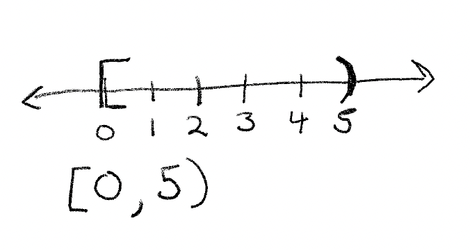

Lists Strings Tuples¶
In this section we’ll take a deeper look at iterables.
Sections¶
Lists Revisited
slicing
list comprehensions
searching and counting
sorting
Strings Revisited
Tuples
Lists of Lists
The three many data structures we are going to see in this section are called iterable data structures. That means, like we saw at the end of the last chapter, we can iterate over them.
For instance:
listing = list(range(10))
for elem in listing:
print(elem)
0
1
2
3
4
5
6
7
8
9
Works because a list is iterable. In Python that means we have what’s called a __iter__ method available to tell Python what to do. In order to check for the __iter__ method we’ll need a special Python function called dir which allows us to see what’s implemented along with a data structure, object, or type.
Let’s call dir on our above listing variable to confirm __iter__ exists:
dir(listing)
['__add__',
'__class__',
'__class_getitem__',
'__contains__',
'__delattr__',
'__delitem__',
'__dir__',
'__doc__',
'__eq__',
'__format__',
'__ge__',
'__getattribute__',
'__getitem__',
'__gt__',
'__hash__',
'__iadd__',
'__imul__',
'__init__',
'__init_subclass__',
'__iter__',
'__le__',
'__len__',
'__lt__',
'__mul__',
'__ne__',
'__new__',
'__reduce__',
'__reduce_ex__',
'__repr__',
'__reversed__',
'__rmul__',
'__setattr__',
'__setitem__',
'__sizeof__',
'__str__',
'__subclasshook__',
'append',
'clear',
'copy',
'count',
'extend',
'index',
'insert',
'pop',
'remove',
'reverse',
'sort']
It might be hard to scan the list of methods to find __iter__, so let’s use a loop to confirm it’s location:
for elem in dir(listing):
if elem == '__iter__':
print("found")
found
As seen in other sections, we can think of the methods above as functions associated with specific data structures. So if we want to grow our list variable listing we would use the append method as:
print(listing)
listing.append(11)
listing
[0, 1, 2, 3, 4, 5, 6, 7, 8, 9]
[0, 1, 2, 3, 4, 5, 6, 7, 8, 9, 11]
Notice that the append method is available in the list of methods associated with our listing variable:
for elem in dir(listing):
if "append" == elem:
print("found")
found
As an aside, the power of Python is these little component tools and functions that come equipped with any object, so you can always figure out what your objects can, cannot and should not be able to do.
In general the methods with __ called a double underscore are called dunder methods, and allow for the builtin behaviors we saw in chapter 1 like indexing into specific elements of a list. Or iteration, like we saw above.
Next let’s look at another powerful tool and it’s associated dunder method, slicing.
Slicing¶
The ability to slice a list means, that we can select a subset of it’s elements just by specifying it’s start and end indices. Let’s look at an example:
listing = list(range(10))
print(listing)
listing[0:5]
[0, 1, 2, 3, 4, 5, 6, 7, 8, 9]
[0, 1, 2, 3, 4]
In the above example we select only the first 5 elements of the list, that is from the first index up to, but not including the second.
In mathematics this would be written as:

In general this is called a half open, or clopen set - because half of the interval is closed and includes the end point, whereas the other half is open and does not include the end point. These clopen sets are used in all slices. This is because we index starting at zero - so the last element of the list is not included. To do otherwise, would mean we include one extra element - and thus our slices would include 6 elements when we went from elements 0 to 5, which feels contradictory - when we add zero of a thing, we ought to not increase it. So when we go from 0 to 5, we add 5 things, which meets intuition for many programmers.
We should be clear here - this was a choice. If you feel that it was a bad one, please make your own language. If it takes off, then you can use that forever more. That is one of the beauties of software engineering - there are some rules, but much of what gets used, outside of the mathematics, is your choice or the choice of others. So there isn’t always something deeper. But I digress.
Something we didn’t discuss last time is how to get the last element of a list, no matter it’s size:
listing = list(range(10))
print(listing)
listing[-1]
[0, 1, 2, 3, 4, 5, 6, 7, 8, 9]
9
If we specify a negative number as the index, we start from the back of the list. The smallest negative number is one, so it gets us the last index of the list. If our list is sorted in ascending order, this means we will get the largest number in our list.
We can also specify slices which include negative numbers:
listing = list(range(15))
print(listing)
listing[3:-2]
[0, 1, 2, 3, 4, 5, 6, 7, 8, 9, 10, 11, 12, 13, 14]
[3, 4, 5, 6, 7, 8, 9, 10, 11, 12]
This asks us for the sublist starting at the 4th element and going to the third to last element. If we wanted everything up to the last element we would do:
listing[:-1]
[0, 1, 2, 3, 4, 5, 6, 7, 8, 9, 10, 11, 12, 13]
Notice we didn’t specify a starting element - this is no accident. Python slices are smart enough to know what you mean. So if you don’t specify a first element, then we either start at the beginning or go to the end of the list, depending on which index we don’t specify. What will happen if don’t specify any indices?
print(listing)
listing[:]
[0, 1, 2, 3, 4, 5, 6, 7, 8, 9, 10, 11, 12, 13, 14]
[0, 1, 2, 3, 4, 5, 6, 7, 8, 9, 10, 11, 12, 13, 14]
That’s right! We just get back the original list. But more importantly, we get back a copy of our original list, rather than the list itself. We’ll see more of this later on, but that’s going to be very important when we talk about functions.
For now let’s confirm this is infact a different list:
listing is listing[:]
False
Here we used the is operator to ask if the two things are the exact same. Not if they contain the same elements, for that we use ==:
listing == listing[:]
True
is asks a deeper question. Do the two things point to the same place in memory. Again don’t worry about the details here, we’ll discuss it later. But for now, we can just say that is is the strongest possible equivalence that Python can make. And it goes deeper to than just data. It’s about where that data is stored in the running Python program. For instance we could do this:
new_list = listing
new_list is listing
True
The reason this works is because of how assignment works. Again, we’ll see more of this later. So if it doesn’t make complete sense, no big deal! Just to close out the section, here is the generic syntax for slicing:
SOME_LIST[START_INDEX : END_INDEX]
List Comprehensions¶
As we saw last time, we have something called a for loop, which is just a fancy while loop, since we can do this:
index = 0
listing = list(range(5))
while index < len(listing):
print(listing[index])
index += 1
0
1
2
3
4
And it’s the same as this:
for elem in listing:
print(elem)
0
1
2
3
4
All we did, was get rid of the need to specify the terminal condition are set up an index, but basically we are doing the same thing. Well, what if we wanted to mutate the values of some list, and store them in a new list, how easy is that to do? Say we wanted the squares for the first 30 natural numbers:
listing = list(range(30))
squares = []
for elem in listing:
squares.append(elem*elem)
squares[25:]
[625, 676, 729, 784, 841]
Turns out there is a nice short hand for transformations on a list called the list comprehension. The syntax is a little weird at first so we’ll show some psuedocode:
[transformation(element) for element in LIST]]
So if we wanted to get just the first 30 numbers we could do:
listing = [elem for elem in range(30)]
print(listing[25:])
[25, 26, 27, 28, 29]
Here the transformation is the identity function, which maps an element to itself. Or the no action function. So we don’t do anything. But we could get the square of the first 30 numbers pretty easily too:
squared = [elem * elem for elem in range(30)]
print(squared[25:])
[625, 676, 729, 784, 841]
As you can see, by comparing the two pieces of code, for quick little transformations, the list comprehension is much easier to write. And honestly, kind of beautiful. That said, for long complicated pieces of logic it’s not appropriate. If you want to use a list comprehension for long complicated code, it’s best to break it up into smaller transforms for a bunch of intermediate steps. This can increase the space useage of your program, so make sure to do so with care! Both space and number of operations can slow down your program - sometimes substantially.
Let’s look at a few more examples of list comprehension transformations. We can also get the decreasing sequence of fractions, easily with list comprehensions:
fractions = [1/elem for elem in range(1, 30)]
fractions[25:]
[0.038461538461538464,
0.037037037037037035,
0.03571428571428571,
0.034482758620689655]
Likewise, combining transformations is pretty easy too:
fractions_squared = [1/(elem * elem) for elem in range(1, 30)]
fractions_squared[25:]
[0.0014792899408284023,
0.0013717421124828531,
0.0012755102040816326,
0.0011890606420927466]
Notice that when the denominator gets bigger the whole number gets smaller. So any sequence like this is strictly decreasing.
Searching and Counting¶
In addition to being able to append elements, we also have methods for telling us about the contents of our list. Two important ones are searching and counting.
With searching we can figure out if certain elements are in our list. And with counting, we can figure out how many occurrences of a given item are in our list.
Let’s look at an example.
Here we are going to try to figure out when we reach a terminal value. When we do, we want to stop iterating.
For this we are going to use the Collatz conjecture that was introduced in class.
sequence = []
start = 19
num = start
while True:
if num % 2 == 0:
num //= 2
else:
num = 3*num + 1
sequence.append(num)
if 1 in sequence:
break
print(f"Found terminal value for number {start} with sequence length {len(sequence)}")
Found terminal value for number 19 with sequence length 20
Here we are using in to search our list. The in function checks if a given element is in our list. If it is, it returns True. If it’s not it returns False.
So for instance:
listing = list(range(10))
12 in listing
False
However:
9 in listing
True
The in function is typically all we need when searching a list for an element. However, sometimes we don’t just need to know if an element is in a list, but where it occurs. For that we need index:
index_of_9 = listing.index(9)
print(index_of_9)
listing[index_of_9]
9
9
We can also use these tools in conjunction:
import random
listing = [random.randint(0, 10) for _ in range(100)]
if 7 in listing:
print(listing.index(7))
0
In addition to being able to sort we can also count the number of occurrences. Suppose we were playing a game, where if we get a certain number of trivia questions wrong, we lose the game. We could count the number of times we get a wrong answer with a -1.
Let’s see that:
import random
guesses = []
while True:
number_one = random.randint(0, 10000)
number_two = random.randint(0, 1000)
guess = int(input(
f"What is {number_one} + {number_two}? "
))
if guess == number_one + number_two:
guesses.append(1)
else:
guesses.append(-1)
if guesses.count(-1) >= 3:
print("game over")
break
What is 6967 + 98? 12
What is 2962 + 572? 10
What is 7053 + 304? 19
game over
You can try this ‘game’ yourself. Remember, you need three wrong answers or it will keep asking you for guesses!
Sorting¶
We talked about sorting a little bit in indexing, but now we’ll go deeper into this topic. Sorting is a fundamental operation in computer science. This is in part because we’ve figured out how to make sorting pretty fast, so it’s a good candidate problem to teach a bunch of nifty techniques. But also because it’s super useful.
One of the things with a sorted list is get the biggest thing in the list. Or we can get the smallest thing in the list. Or we can get the middle number in the list.
All of these things are going to be very important when we start talking about describing data. Which we will get to later in the class. So let’s get our feet wet now!
A simple example - getting the biggest number from a random list of elements:
listing = [random.randint(0, 10) for _ in range(100)]
listing.sort()
listing[-1]
10
Notice that we use _ here to indicate that we don’t care about our index. Since we don’t use it later.
Next, notice that to sort, we can just call listing.sort() on our list in order to get it sorted. And we can then get the largest number of our list, by simply getting the last element in the list.
We can also count the number of occurrences of the largest element:
listing.count(10)
9
Since our list is sorted, these 9 occurrences of 10 should occur contiguously, which is just a fancy way of say, together:
listing[-9:]
[10, 10, 10, 10, 10, 10, 10, 10, 10]
And indeed they do! Here the -9 means we start from the 9th number from the end.
Python also comes with a builtin max function, that will give us the maximum element in any list:
max(listing)
10
I’m not sure why, but the max seems to perform about as fast on sorted versus unsorted lists. That seems like a worthy research project for an ambituos student! Luckily all the source code for Python is open. You can go read it here.
Let’s just confirm this:
listing = [random.randint(0, 100000) for _ in range(10000)]
listing.sort()
%timeit max(listing)
168 µs ± 645 ns per loop (mean ± std. dev. of 7 runs, 10000 loops each)
new_list = [random.randint(0, 100000) for _ in range(10000)]
%timeit max(new_list)
162 µs ± 2.88 µs per loop (mean ± std. dev. of 7 runs, 10000 loops each)
We can also easily recover the smallest number of a list, if it’s sorted:
listing = [random.randint(0, 10) for _ in range(100)]
listing.sort()
listing[0]
0
Just like the max function, there is also a min function:
min(listing)
0
We can also get the middle number of a sorted list pretty easily too:
listing = [random.randint(0, 10) for _ in range(100)]
listing.sort()
listing[len(listing)//2]
5
Keep in mind, while all we need is the half way point of the list - aka len(listing)//2 to get the ‘middle’ number. This may not be the middle ‘value’. For that we need to consider the following:
What if the list is even and no value repeats. What would be the middle number then? In this case, there are technically two middle numbers.
Let’s look at an example:
listing = [1, 2, 3, 4]
mid_index = len(listing)//2
listing[mid_index]
3
Here the middle number is 3, but is that the middle value? In this case it’s not. That’s because 3 is not half way between 1 and 4. In fact, the half way point between 1 and 4 is 2.5.
But that’s not in our list! How are we supposed to deal with that? Well luckily there is a straight forward way to deal with that:
Just take the mean of the two numbers in the middle -
In this case, it’s 2 and 3:
(2 + 3)/2
2.5
Now we get 2.5! So everything is right in the world. If we want the middle value, called the median we can write some code to do this:
data = [random.randint(0, 10000) for _ in range(10)]
data.sort()
n = len(data)
if n % 2 == 1:
middle_index = n//2
median = data[middle_index]
else:
lower_middle_index = n//2
higher_middle_index = n//2 + 1
median = data[lower_middle_index] + data[higher_middle_index]
median /= 2
median
7766.5
data
[222, 335, 2578, 4219, 5041, 7207, 8326, 8342, 9432, 9790]
The last descriptive statistic we will look at is called the mode. The mode is the most frequently occurring number in a sequence of numbers. When we calculate the mode, we assume that our sequence has values that occur more than once.
Let’s make use of the count function to write a procedure for the mode:
data = [random.randint(0, 9) for _ in range(1000)]
mode = data[0]
mode_count = data.count(mode)
for elem in data:
freq_count = data.count(elem)
if freq_count > mode_count:
mode = elem
mode_count = freq_count
print(mode, mode_count)
3 121
As you can see, 3 is the most frequent number and occurs 121 times! That’s more than a 10th of the list. Since we only have only 10 numbers, and way more observations. We should assume that all 10 numbers occur pretty frequently. In general the percentage of each number should head towards 1/10. Which is the probability of getting any one of those numbers. We can confirm this by drawing a much larger number of samples and then looking at the relative occurrences of each value:
data = [random.randint(0, 9) for _ in range(10000000)]
for i in range(0, 10):
print(f"Pr({i}) = {data.count(i)/len(data)}")
Pr(0) = 0.1001388
Pr(1) = 0.1001388
Pr(2) = 0.0998518
Pr(3) = 0.0998235
Pr(4) = 0.100139
Pr(5) = 0.0999499
Pr(6) = 0.0999459
Pr(7) = 0.1001451
Pr(8) = 0.0999229
Pr(9) = 0.0999443
As you can see, the probabilities get remarkably close to their theoretical limit.
Strings¶
Now that we’ve talked about a number of properties of lists, lets move onto a very special list that we’ve been using a lot - a string.
That’s right! A string is just a list. And to prove it, we can index into a string:
"Hello there"[0]
'H'
We can also slice a string:
"Hello there"[:5]
'Hello'
We can even iterate over the elements of a string:
for char in "hello":
print(char)
h
e
l
l
o
But can we change the elements of a string?
string = "hello"
string[0] = "b"
---------------------------------------------------------------------------
TypeError Traceback (most recent call last)
<ipython-input-89-b6ae513267fb> in <module>
1 string = "hello"
----> 2 string[0] = "b"
TypeError: 'str' object does not support item assignment
What’s going on here?! We can certainly do that with a list:
listing = list(range(10))
print(listing)
listing[0] = 29
listing
[0, 1, 2, 3, 4, 5, 6, 7, 8, 9]
[29, 1, 2, 3, 4, 5, 6, 7, 8, 9]
The reason we can’t do that with a string is something called mutability. If a data structure is mutable then that means we can change the elements of the structure directly. Lists are mutable, which has consequences, and is the reason memory location matters. But with strings, we have an immutable data structure, so we can’t directly change the elements of a string. We can replace, the elements, but doing so means, we create a new string with some subset of old elements and some new:
"things".replace("s", '')
'thing'
In addition to being able to replace this way, we can also use a format string to ‘inject’ the values from code. We’ve been using this for a while, so now let’s be explicit about how it works:
f'SOME STUFF GOES HERE {VARIABLE OR CODE GOES HERE}'
Let’s look at some examples. For instance if we left off the f at the beginning of the string we’d get:
whatever = 7
'thing {whatever}'
'thing {whatever}'
But if we add the f to the above code we get:
whatever = 7
f'thing {whatever}'
'thing 7'
Now the string interpolates the thing inside the {}. Which is another way of saying, executes it!
We can execute variables, or pieces of code:
whatever = 7
f'thing {whatever//2}'
'thing 3'
We can even make function calls inside of format strings:
listing = [random.randint(0, 9) for _ in range(30)]
f'The above string has a min of {min(listing)} a max of {max(listing)}'
'The above string has a min of 0 a max of 9'
The nice thing about format strings is we can be explicit about what we are putting in the string to anyone reading our code. We don’t have to guess what the format string is going to inject.
It’s just super useful.
Now let’s look at one of the special methods on strings: split.
The split method is incredibly helpful. It let’s you create a list from a string. So we could have something like:
string = "Hello there friends, how are you?"
If we wanted to count the number of words in the string we could do:
listing = string.split()
print(listing)
len(listing)
['Hello', 'there', 'friends,', 'how', 'are', 'you?']
6
Pretty neat right?! We can also glue strings together with the inverse of a split - a join:
print(" ".join(listing))
string == " ".join(listing)
Hello there friends, how are you?
True
Tuples¶
Next let’s look at another immutable data structure, except this one is list-like. The tuple!
A tuple is a list that you can’t grow or change:
t = (1,2,3,4)
t[0] = 6
t
---------------------------------------------------------------------------
TypeError Traceback (most recent call last)
<ipython-input-108-a08bd9145aac> in <module>
1 t = (1,2,3,4)
----> 2 t[0] = 6
3 t
TypeError: 'tuple' object does not support item assignment
t.append(7)
---------------------------------------------------------------------------
AttributeError Traceback (most recent call last)
<ipython-input-109-91f1b43b8697> in <module>
----> 1 t.append(7)
AttributeError: 'tuple' object has no attribute 'append'
We can see what we can do with tuples with dir:
dir(t)
['__add__',
'__class__',
'__class_getitem__',
'__contains__',
'__delattr__',
'__dir__',
'__doc__',
'__eq__',
'__format__',
'__ge__',
'__getattribute__',
'__getitem__',
'__getnewargs__',
'__gt__',
'__hash__',
'__init__',
'__init_subclass__',
'__iter__',
'__le__',
'__len__',
'__lt__',
'__mul__',
'__ne__',
'__new__',
'__reduce__',
'__reduce_ex__',
'__repr__',
'__rmul__',
'__setattr__',
'__sizeof__',
'__str__',
'__subclasshook__',
'count',
'index']
The answer is - not much. Just searching basically. We can also iterate over the elements of a tuple. But that’s it. So why would we want a tuple? We for starters:
Since tuples can’t change that makes them great for storing things together inside a list.
Here is an example - let’s return to our game example from before:
import random
guesses = []
correct_guesses = []
wrong_guesses = []
while True:
number_one = random.randint(0, 10)
number_two = random.randint(0, 10)
guess = int(input(
f"What is {number_one} + {number_two}? "
))
if guess == number_one + number_two:
guesses.append(1)
correct_guesses.append(
(number_one, number_two, number_one + number_two)
)
else:
guesses.append(-1)
wrong_guesses.append(
(number_one, number_two, number_one + number_two)
)
if guesses.count(-1) >= 3:
print("game over")
break
print(f"You got {len(correct_guesses)} correct")
print(f"You got {len(wrong_guesses)} wrong")
print("Here are all the guesses you got right:")
print()
for elem in correct_guesses:
print("first number:", elem[0])
print("second number:", elem[1])
print("sum", elem[2])
print()
print()
print("Here are all the guesses you got wrong:")
print()
for elem in wrong_guesses:
print("first number:", elem[0])
print("second number:", elem[1])
print("sum", elem[2])
What is 8 + 2? 10
What is 7 + 3? 10
What is 4 + 1? 5
What is 3 + 7? 19
What is 10 + 10? 12
What is 4 + 1? 4
game over
You got 3 correct
You got 3 wrong
Here are all the guesses you got right:
first number: 8
second number: 2
sum 10
first number: 7
second number: 3
sum 10
first number: 4
second number: 1
sum 5
Here are all the guesses you got wrong:
first number: 3
second number: 7
sum 10
first number: 10
second number: 10
sum 20
first number: 4
second number: 1
sum 5
Since we are dealing with data that we don’t want someone else to change - it’s really useful to store our results in a list, but also to store each set of values in a tuple.
Tuples are great for storage inside of lists, because they are compact, immutable and we can reference individual elements easily.
Another place tuples get used a lot is with coordinate systems. We can think of the elements of a tuple as the coordinates of a space. For instance \(\mathbb{R}^{3}\) can be represented by tuples with 3 elements:
import random
(random.randint(0, 10), random.randint(0, 10), random.randint(0, 10))
(1, 0, 8)
And we could get a list of coordinates in \(\mathbb{R}^{3}\) with:
coordinates_in_r3 = [
(random.randint(0, 10),
random.randint(0, 10),
random.randint(0, 10))
for _ in range(50)
]
coordinates_in_r3[:4]
[(10, 5, 6), (2, 4, 2), (5, 1, 6), (8, 8, 8)]
We can even get the distance between every pair of coordinates:
import math
distances = []
for index_i, elem_i in enumerate(coordinates_in_r3):
for index_j, elem_j in enumerate(coordinates_in_r3):
if index_i == index_j:
continue
differences = [
elem_i[k] - elem_j[k]
for k in range(3)
]
squared_diffs = [math.pow(elem, 2) for elem in differences]
summed_squared_diffs = sum(squared_diffs)
distances.append(
math.sqrt(summed_squared_diffs)
)
print(f"The closest pair is {min(distances)} and the furthest pair is {max(distances)}")
The closest pair is 0.0 and the furthest pair is 14.352700094407323
Lists of Lists¶
The final topic in this section is lists of lists. We’ve sort of already seen this with the last section -
Instead of having lists of tuples, we’ll just use lists instead. Other than that there isn’t really much new here conceptually. Let’s look at an example:
list_of_lists = []
for elem_i in range(10):
tmp = []
for elem_j in range(10):
tmp.append(elem_j)
list_of_lists.append(tmp)
for elem in list_of_lists:
print(elem)
[0, 1, 2, 3, 4, 5, 6, 7, 8, 9]
[0, 1, 2, 3, 4, 5, 6, 7, 8, 9]
[0, 1, 2, 3, 4, 5, 6, 7, 8, 9]
[0, 1, 2, 3, 4, 5, 6, 7, 8, 9]
[0, 1, 2, 3, 4, 5, 6, 7, 8, 9]
[0, 1, 2, 3, 4, 5, 6, 7, 8, 9]
[0, 1, 2, 3, 4, 5, 6, 7, 8, 9]
[0, 1, 2, 3, 4, 5, 6, 7, 8, 9]
[0, 1, 2, 3, 4, 5, 6, 7, 8, 9]
[0, 1, 2, 3, 4, 5, 6, 7, 8, 9]
As you can see - our iteration changed. We have to use a for loop inside our for loop to populate the inner list. We could of course replace that with a list comprehension:
list_of_lists = []
for elem_i in range(10):
list_of_lists.append(
[elem_j for elem_j in range(10)]
)
for elem in list_of_lists:
print(elem)
[0, 1, 2, 3, 4, 5, 6, 7, 8, 9]
[0, 1, 2, 3, 4, 5, 6, 7, 8, 9]
[0, 1, 2, 3, 4, 5, 6, 7, 8, 9]
[0, 1, 2, 3, 4, 5, 6, 7, 8, 9]
[0, 1, 2, 3, 4, 5, 6, 7, 8, 9]
[0, 1, 2, 3, 4, 5, 6, 7, 8, 9]
[0, 1, 2, 3, 4, 5, 6, 7, 8, 9]
[0, 1, 2, 3, 4, 5, 6, 7, 8, 9]
[0, 1, 2, 3, 4, 5, 6, 7, 8, 9]
[0, 1, 2, 3, 4, 5, 6, 7, 8, 9]
We could also treat our list of lists as a matrix. A matrix is like a list of lists, in that it has multiple indices. However, there is an important difference - a matrix is a mathematical object. That means we can do algebra over the entries of our matrix.
In particular, we can do addition:
matrix_one = []
for elem_i in range(10):
matrix_one.append(
[elem_j for elem_j in range(10)]
)
matrix_two = []
for elem_i in range(10):
matrix_two.append(
[elem_j for elem_j in range(10)]
)
matrix_three = []
for index_i in range(10):
matrix_three.append([
matrix_one[index_i][index_j] + matrix_two[index_i][index_j]
for index_j in range(10)
])
print("matrix one:")
for elem in matrix_one:
print(elem)
print("matrix two:")
for elem in matrix_two:
print(elem)
print("matrix three:")
for elem in matrix_three:
print(elem)
matrix one:
[0, 1, 2, 3, 4, 5, 6, 7, 8, 9]
[0, 1, 2, 3, 4, 5, 6, 7, 8, 9]
[0, 1, 2, 3, 4, 5, 6, 7, 8, 9]
[0, 1, 2, 3, 4, 5, 6, 7, 8, 9]
[0, 1, 2, 3, 4, 5, 6, 7, 8, 9]
[0, 1, 2, 3, 4, 5, 6, 7, 8, 9]
[0, 1, 2, 3, 4, 5, 6, 7, 8, 9]
[0, 1, 2, 3, 4, 5, 6, 7, 8, 9]
[0, 1, 2, 3, 4, 5, 6, 7, 8, 9]
[0, 1, 2, 3, 4, 5, 6, 7, 8, 9]
matrix two:
[0, 1, 2, 3, 4, 5, 6, 7, 8, 9]
[0, 1, 2, 3, 4, 5, 6, 7, 8, 9]
[0, 1, 2, 3, 4, 5, 6, 7, 8, 9]
[0, 1, 2, 3, 4, 5, 6, 7, 8, 9]
[0, 1, 2, 3, 4, 5, 6, 7, 8, 9]
[0, 1, 2, 3, 4, 5, 6, 7, 8, 9]
[0, 1, 2, 3, 4, 5, 6, 7, 8, 9]
[0, 1, 2, 3, 4, 5, 6, 7, 8, 9]
[0, 1, 2, 3, 4, 5, 6, 7, 8, 9]
[0, 1, 2, 3, 4, 5, 6, 7, 8, 9]
matrix three:
[0, 2, 4, 6, 8, 10, 12, 14, 16, 18]
[0, 2, 4, 6, 8, 10, 12, 14, 16, 18]
[0, 2, 4, 6, 8, 10, 12, 14, 16, 18]
[0, 2, 4, 6, 8, 10, 12, 14, 16, 18]
[0, 2, 4, 6, 8, 10, 12, 14, 16, 18]
[0, 2, 4, 6, 8, 10, 12, 14, 16, 18]
[0, 2, 4, 6, 8, 10, 12, 14, 16, 18]
[0, 2, 4, 6, 8, 10, 12, 14, 16, 18]
[0, 2, 4, 6, 8, 10, 12, 14, 16, 18]
[0, 2, 4, 6, 8, 10, 12, 14, 16, 18]
Or subtraction:
matrix_one = []
for elem_i in range(10):
matrix_one.append(
[elem_j for elem_j in range(10)]
)
matrix_two = []
for elem_i in range(10):
matrix_two.append(
[elem_j for elem_j in range(10)]
)
matrix_three = []
for index_i in range(10):
matrix_three.append([
matrix_one[index_i][index_j] - matrix_two[index_i][index_j]
for index_j in range(10)
])
print("matrix one:")
for elem in matrix_one:
print(elem)
print("matrix two:")
for elem in matrix_two:
print(elem)
print("matrix three:")
for elem in matrix_three:
print(elem)
matrix one:
[0, 1, 2, 3, 4, 5, 6, 7, 8, 9]
[0, 1, 2, 3, 4, 5, 6, 7, 8, 9]
[0, 1, 2, 3, 4, 5, 6, 7, 8, 9]
[0, 1, 2, 3, 4, 5, 6, 7, 8, 9]
[0, 1, 2, 3, 4, 5, 6, 7, 8, 9]
[0, 1, 2, 3, 4, 5, 6, 7, 8, 9]
[0, 1, 2, 3, 4, 5, 6, 7, 8, 9]
[0, 1, 2, 3, 4, 5, 6, 7, 8, 9]
[0, 1, 2, 3, 4, 5, 6, 7, 8, 9]
[0, 1, 2, 3, 4, 5, 6, 7, 8, 9]
matrix two:
[0, 1, 2, 3, 4, 5, 6, 7, 8, 9]
[0, 1, 2, 3, 4, 5, 6, 7, 8, 9]
[0, 1, 2, 3, 4, 5, 6, 7, 8, 9]
[0, 1, 2, 3, 4, 5, 6, 7, 8, 9]
[0, 1, 2, 3, 4, 5, 6, 7, 8, 9]
[0, 1, 2, 3, 4, 5, 6, 7, 8, 9]
[0, 1, 2, 3, 4, 5, 6, 7, 8, 9]
[0, 1, 2, 3, 4, 5, 6, 7, 8, 9]
[0, 1, 2, 3, 4, 5, 6, 7, 8, 9]
[0, 1, 2, 3, 4, 5, 6, 7, 8, 9]
matrix three:
[0, 0, 0, 0, 0, 0, 0, 0, 0, 0]
[0, 0, 0, 0, 0, 0, 0, 0, 0, 0]
[0, 0, 0, 0, 0, 0, 0, 0, 0, 0]
[0, 0, 0, 0, 0, 0, 0, 0, 0, 0]
[0, 0, 0, 0, 0, 0, 0, 0, 0, 0]
[0, 0, 0, 0, 0, 0, 0, 0, 0, 0]
[0, 0, 0, 0, 0, 0, 0, 0, 0, 0]
[0, 0, 0, 0, 0, 0, 0, 0, 0, 0]
[0, 0, 0, 0, 0, 0, 0, 0, 0, 0]
[0, 0, 0, 0, 0, 0, 0, 0, 0, 0]
However, multiplication presents a challenge (in that it requires extra intuition and steps) so we won’t show that here.